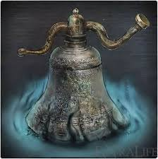

|
Item Name |
Description |
|  |
Beckoning Bell |
Great Old Bell discovered in the underground labyrinth.
Its ring resonates across worlds, and the first hunter used it
as a special signal to call hunters from other worlds to cross
the gap and cooperate.
A human must use Insight to ring this uncanny bell, but the
benefits of cross-world cooperation are many.
**Note Online use only. Cannot use this item offline.**
|
 |
League Staff |
The League staff is the sign of a confederate.
A directory within the hilt lists the names of fellow
confederates.
Members of the League brandish this staff to indicate
themselves to fellow members of the League.
There shall be no sympathy for those engaged in the bloody
mission of the League. No matter that an oath must be taken
to uphold the illusion.
|
 |
Notebook |
Messengers are inhabitants of the dream who revere the
brave hunters. Use them to send messages to other worlds.
Leave notes with messengers, read the notes left by
messengers in other worlds, and rate notes to participate
in the formation of a shared inter-plane intelligence.
**Note Online use only. Cannot use this item offline.**
|
 |
Silencing Blank |
Hunters are linked by the resonance of bells with special
encoded timbres. This inaudible burst disrupts such
resonance.
Fire to end co-operation, and prevent further co-operation.
Firing this does not disrupt the resonance of a sinister bell.
**Note Online use only. Cannot use this item offline.**
|
 |
Sinister Resonant Bell |
A blood-stained bell discovered in the old underground
labyrinth.
One of the resonating bells that cross the gaps of worlds, but
this one knells for misfortune and malice.
The Sinister Bell is an object of dark thoughts. Ring it to
become the enemy of a hunter in another world.
**Note Online use only. Cannot use this item offline.**
|
 |
Small Resonant Bell |
Small bell discovered in the old underground labyrinth.
Its ring resonates across worlds, and the first hunter
used it as a special signal to call hunters from other
worlds to cross the gap and cooperate.
This bell resonates with its counterpart, the Beckoning
Bell. Ring to help hunters in other worlds.
**Note Online use only. Cannot use this item offline.**
|
 |
Vileblood Register |
Red-leather record of the Vilebloods loyal to the covenant of
Annalise, Queen of the Vilebloods, at Cainhurst Castle.
A record of the Vilebloods, blood-lusting hunters who seek
blood dregs of their prey, kept throughout the ages.
**Note Online use only. Cannot use this item offline.**
|